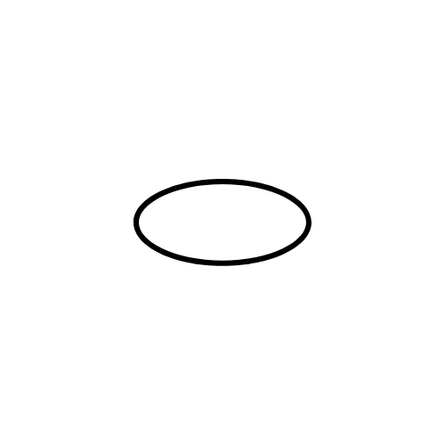
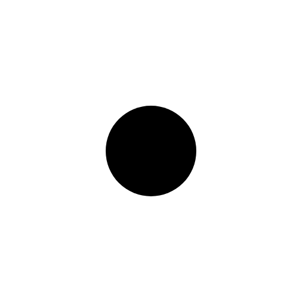
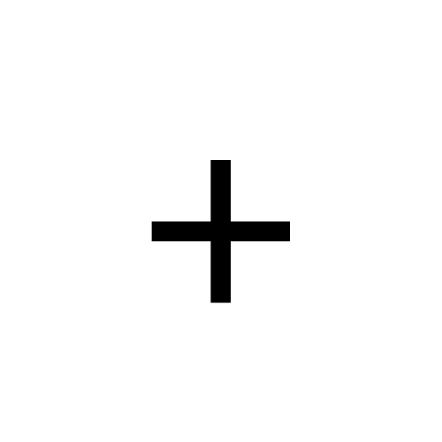
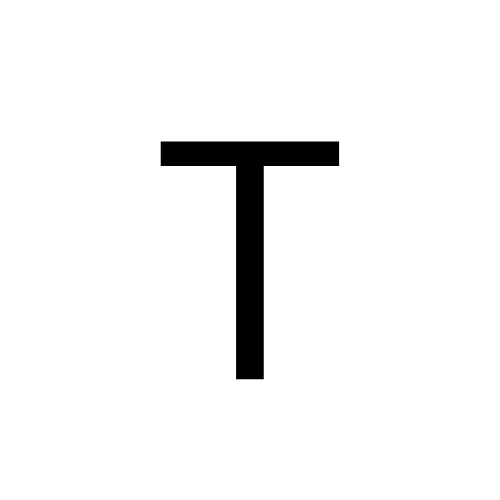
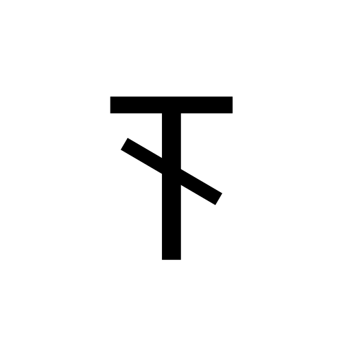
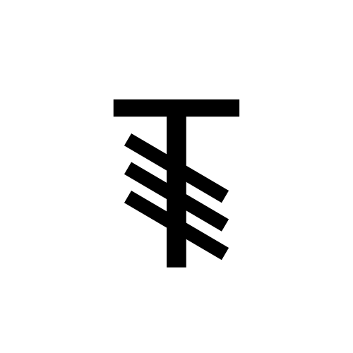
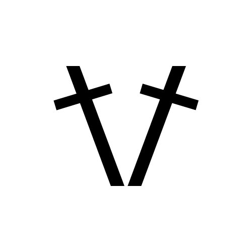
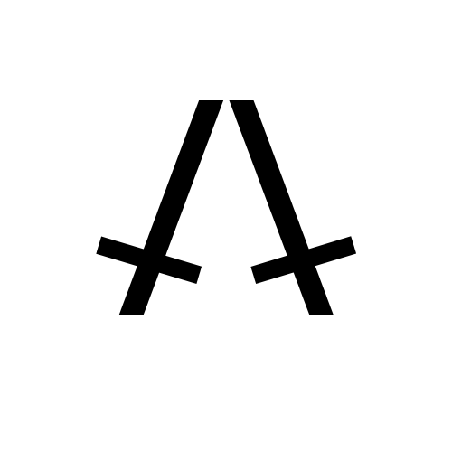

Les abréviations en crochet
Lorsque l'on débute en crochet, il est important de commencer par apprendre les abréviations, ainsi que les symboles qui correspondent aux mailles.
Nous allons voir ici, les abréviations des mailles.
Liste des abréviations principales
- Maille en l'air : ml
- Maille coulée : mc
- Maille serrée : ms
- Demi-bride : db ou dbr
- Bride : b ou br
- Double-bride : Db ou dblebr
- Triple-bride : Tb
- Augmenter : augm
- Diminuer : dim
Cette liste d’abréviations est non exhaustive.
Il existe encore d’autres abréviations que vous pouvez retrouver
ici
Symboles correspondants
| Abréviation | Symbole |
|---|---|
| ml |  |
| mc |  |
| ms |  |
| db |  |
| b |  |
| Db | |
| Tb |  |
| augm |  |
| dim |  |
Pour plus de symboles, cliquez ici.
Voici quelques liens vers des sites qui montrent comment lire un diagramme au crochet.